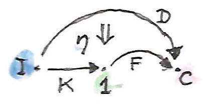
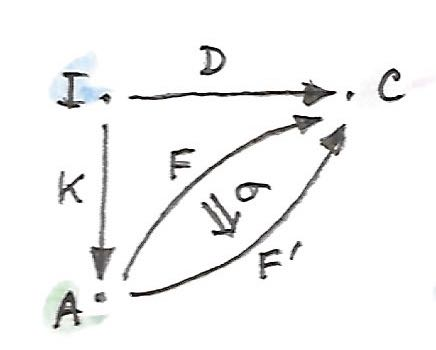

28 ส่วนขยายKan (Sketch)
จากถึงตอนนี้เราได้ทำงานกับcategoryเดียวหรือคู่ของcategories ในบางกรณีที่นั้นค่อนข้างมีข้อจำกัด
ตัวอย่างเช่น ในการนิยามlimitในcategory\(\textbf{C}\)เรานำเสนอcategoryตัวชี้\(\textbf{I}\)ในฐานะแม่แบบสำหรับแบบแผนที่จะสร้างฐานสำหรับconeของเรา มันอาจจะสมเหตุสมผลในการนำเสนออีกcategoryที่เป็นตัวที่ตรงไปตรงมาในการเป็นแม่แบบสำหรับจุดยอดของcone แทนที่จะใช้functorคงที่\(\Delta_c\)จาก\(\textbf{I}\)ไปยัง\(\textbf{C}\)
ใันถึงเวลาในการแก้ไขความกระอักกระอ่วนนี้ เรามานิยามlimitโดยการใช้สามcategoryนี้ เรามาเริ่มด้วยfunctor\(D\)จากcategoryตัวชี้\(\textbf{I}\)ไปยัง\(\textbf{C}\) นี้คือfunctorทราเลือกbaseของcone diagramของfunctorคือ

การเพื่มขึ้นมาใหม่คือcategory\(\textbf{1}\)ที่มีวัตถุเดียว(และmorphism identityเดียว) ได้มีfunctor\(K\)ที่เป็นไปได้ตัวหนึ่งจาก\(\textbf{I}\)ไปยังcategoryนี้ มันโยงวัตถุทั้งหมดไปยังวัตถุเดียวใน\(\textbf{1}\) และทุกmorphismsไปยังmorphismแบบfunctor identityใดๆก็ตามจาก\(\textbf{1}\)ไปยัง\(\textbf{C}\)เลือกจุดยอดสำหรับconeของเรา

coneนั้นคือการแปลงแบบธรรมชาติ\(\varepsilon\)จาก\(F \circ K\)ไปยัง\(D\) สังเกตว่า\(F \circ K\)ทำแบบเดียวกันเมื่อเทียบกับ\(\Delta_c\)ดั้งเดิมของเรา diagramต่อไปนี้แสดงการแปลงแบบนี้

เราสามารถนิยามคุณสมบัติสากลที่เลือกfunctor\(F\)ที่“ดีที่สุด” \(F\)นี้จะโยง\(\textbf{1}\)ไปยังวัตถุที่คือlimitของ\(D\)ใน\(\textbf{C}\) และการแปลงแบบธรรมชาติ\(\varepsilon\)จาก\(F \circ K\)ไปยัง\(D\)จะให้projectionsที่ตรงกัน functorสากลนี้ถูกเรียกว่าส่วนขยายKanด้านขวาของ\(D\)ร่วมกับ\(K\)และมีเครื่องหมายเป็น\(\operatorname{Ran}_KD\)
เรามากำหนดคุณสมบัติสากลนี้ สมมติว่าเรามีอีกconeหนึ่งที่คืออีกfunctor\(F'\)คู่กับการแปลงแบบธรรมชาติ\(\varepsilon'\)จาก\(F' \circ K\)ไปยัง \(D\)

ถ้าส่วนขยายKan\(F=\operatorname{Ran}_KD\)มีอยู่ ก็จะมีการแปลงแบบธรรมชาติที่เป็นเอกลักษณ์\(\sigma\)จาก\(F'\)ไปยังมันในแบบที่ว่า\(\varepsilon'\)แยกตัวประกอบผ่าน\(\varepsilon\)นั้นคืิอ
\[ \varepsilon' = \varepsilon\ .\ (\sigma \circ K) \]
ในที่นี้\(\sigma \circ K\)คือการประกอบทางแนวนอนของสองการแปลงแบบธรรมชาติ(หนึ่งในนั้นเป็นการ แปลงแบบธรรมชาติแบบidentityบน\(K\)) การแปลงแบบนี้ก็จะถูกประกอบแนวตั้งกับ\(\varepsilon\)

ในรูปแบบของส่วนประกอบ ในตอนที่กรัทำบนวัตถุ\(i\)ใน\(\textbf{I}\)เราได้
\[ \varepsilon'_i = \varepsilon_i \circ \sigma_{K i} \]
ในกรณีของเรา\(\sigma\)นั้นมีแค่สวนประกอบเดี่ยวที่ตรงกับวัตถุเดี่ยวของ\(\textbf{1}\) กังนั้นแน่นอนว่าได้มีmorphismที่เป็นเอกลักษณ์จากยอดของconeนิยามโดย\(F'\)ไปยังยอดของconeสากลนิยามโดย\(\operatorname{Ran}_KD\) เงื่อนไขการสลับกลุ่มนั้นคือตัวที่ต้องการโดนนิยามของlimit
แต่สิ่งที่สำคัญคือการที่เรานั้นมีอิสระในการแทนที่category\(\textbf{1}\)ที่เรียบง่ายด้วยcategory\(\textbf{A}\)อะไรก็ได้ และนิยามของส่วนขยายKanด้านขวานั้นก็ยังเป็นไปได้
28.1 ส่วนขยายKanด้านขวา
ส่วนขยายKanด้านขวาของfunctor\(D::\textbf{I}\to\textbf{C}\)ร่วมกับ\(K::\textbf{I}\to\textbf{A}\)คือfunctor\(F::\textbf{A}\to\textbf{C}\)(ที่\(\operatorname{Ran}_KD\))คู่กับการแปลงแบบธรรมชาติ
\[ \varepsilon :: F \circ K \to D \]
ในแบบที่ว่าในfunctorอื่นๆใดๆก็ตาม\(F'::\textbf{A}\to\textbf{C}\)และการแปลงแบบธรรมชาติอย่าง
\[ \varepsilon' :: F' \circ K \to D \]
ได้มีการแปลงแบบธรรมชาติที่เป็นเอกลักษณ์
\[ \sigma :: F' \to F \]
ที่แยกตัวประกอบ\(\varepsilon'\)
\[ \varepsilon' = \varepsilon\ .\ (\sigma \circ K) \]
นิยามนั้นค่อนข้างยางแต่มันสามาถถูกแสดงในdiagramที่ดูดีนี้

วิธีการที่น่าสนใจในการมองที่สิ่งนี้คืือสังเกตว่าในแนวคิดนี้แล้วส่วนขยายKanนั้นกระทำเหมือนinverseของ”การคูณของfunctor” บางคนเขียนไปไกลจนถึงการใช้สัญลักษณ์\(D/K\)สำหรับ\(\operatorname{Ran}_KD\) แน่นอนว่าในสัญลักษณ์นี้ นิยามของ\(\varepsilon\)ที่ก็ถูกเรียกเป็นcounitของส่วนขยายKanด้านขวา ดูเหมือนการตัดออก
\[ \varepsilon::D/K\circ K\to D \]
ได้มีการตีความในอีกแบบหนึ่งของส่วนขยายของKan ลองพิจารณาว่าfunctor\(K\)นั้นฝังcategory\(\textbf{I}\)ไว้ใน\(\textbf{A}\) ในกรณีที่ง่ายที่สุด\(\textbf{I}\)ก็อาจจะเป็นแค่categoryย่อยของ\(\textbf{A}\) เรามีfunctor\(D\)ที่โยง\(\textbf{I}\)ไปยัง\(\textbf{C}\) เราสามารถที่จะขยาย\(D\)ไปยังfunctor\(F\)ที่ถูกนิยามทั้งหมดใน\(\textbf{A}\)ได้หรือเปล่า? ในอุดมคติแล้ว การขยายอาจจะทำให้การประกอบ\(F\circ K\)นั้นisomorphicกับ\(D\) ในอีกความหมายหนึ่ง\(F\)อาจจะขยายdomainของ\(D\)ไปยัง\(\textbf{A}\) แต่isomorphismแบบเต็มๆนั้นเป็นสิ่งที่เกินไปและเราสามารถทำได้ด้วนแค่ครึ่งหนึ่งของมันคือ การแปลงแบบธรรมชาติ\(\varepsilon\)ทางเดียวจาก\(F\circ K\)ไปยัง\(D\)(ส่วนขยายKanด้านช้ายเลือกอีกทิศทางหนึ่ง)

แน่นอนว่าการรูปของการฝังจะไม่สามารถใช้ได้ในตอนที่functor\(K\)นั้นไม่ injectiveบนวัตถุหรือไม่faithfulบนhom-setsเหมือนในตัวอย่างของlimit ในกรณรีนั้นแล้วส่วนขยายของkanพยายามอย่างที่สุดในการอนุมานข้อมูลที่สูญหายออกไป
28.2 ส่วนขยายKanในฐานะAdjunction
ในตอนนี้สมมุติว่าส่วนขยายKanด้านช้ายนั้นมีตัวตนอยู่สำหรับทุกๆ\(D\)(และ\(K\)ที่ไม่เปลี่ยนไป) ในกรณีนี้\(\operatorname{Ran}_K-\)(ที่เส้นแทนที่\(D\))คือfunctorจากcategoryแบบfunctor\([\textbf{I},\textbf{C}]\)ไปยังcategoryแบบfunctor\([\textbf{A},\textbf{C}]\) มันกลับกลายเป็นว่าfunctorนี้คือadjointด้ายขวาของfunctorของการกระกอบก่อน\(-\circ K\) ที่ส่วนหลังโยงfunctorsใน\([\textbf{A},\textbf{C}]\) ไปยังfunctorsใน\([\textbf{I},\textbf{C}]\) adjunctionคือ
\[ [\textbf{I}, \textbf{C}](F' \circ K, D) \cong [\textbf{A}, \textbf{C}](F', \operatorname{Ran}_{K}D) \]
มันคือการเขียนใหม่ของความจริงที่ว่าทุกๆการแปลงแบบธรรมชาติที่เราเรียกว่า\(\varepsilon'\)นั้นตรงกันกับการแปลงแบบธรรมชาติที่เป็นเอกลักษณ์ที่เราเรียกว่า\(\sigma\)

ยิ่งไปกว่านั้นถ้าเราเลือกcategory\(\textbf{I}\)ให้เหมือนกับ\(\textbf{C}\)เราก็จะสามารถแทนที่functor identityของ\(I_\textbf{C}\)สำหรับ\(D\) เราก็จะได้สมการแบบนี้
\[ [\textbf{C}, \textbf{C}](F' \circ K, I_\textbf{C}) \cong [\textbf{A}, \textbf{C}](F', \operatorname{Ran}_{K}I_\textbf{C}) \]
เราสามารถเลือก\(F'\)ในตอนนี้ให้เป็นแบบเดียวกันกับ\(\operatorname{Ran}_{K}I_\textbf{C}\)ในกรณีนี้แล้วทางด้านขวามีการ แปลงแบบธรรมชาติแบบidentityและตรงกับด้านนี้คือทางด้านช้ายที่ให้เรากับการแปลงแบบธรรมชาติดังต่อไปนี้
\[ \varepsilon :: \operatorname{Ran}_{K}I_\textbf{C}\circ K\to I_\textbf{C} \]
สิ่งนี้ดูคล้ายอย่างมากกับcounitของadjunctionอย่าง
\[ \operatorname{Ran}_{K}I_\textbf{C} \dashv K \]
แน่นอนว่าส่วนขยายKanด้านขวาของfunctor identityคู่กับfunctor\(K\)สามารถถูกใช้ในการคำนวณadjointด้านช้ายของ\(K\) สำหรับอย่างนั้นแล้ว อีกเงื่อนไขหนึ่งนั้นก็มีความจำเป็นคือส่วนขยายKanด้านขวาต้องถูกคงไว้โดยfunctor\(K\) การคงไว้ของส่วนขยายหมายความว่า ถ้าเราคำนวณส่วนขยายKanของfunctorแบบประกอบก่อนกับ\(K\) เราควรที่จะได้ผลลัพธ์เดียวกันในการ ทำการประกอบ\(K\)ก่อนกับส่วนขยายKan ในกรณีของเราเงื่อนไขนี้สามารถทำให้เรียบง่ายไปเป็น
\[ K \circ \operatorname{Ran}_{K}I_{\textbf{C}} \cong \operatorname{Ran}_{K}K \]
สังเกตว่าในการใช้ สัญลักษณ์นี้การหารโดย\(K\) adjunctionสามารถถูกเขียนในฐานะ
\[ I/K \dashv K \]
ที่ย้ำความเช้าใจของเราว่าadjunctionนั้นอธิบายinverseบางประเภท เงื่อนไขของการดำรงไว้กลายมาเป็น
\[ K \circ I/K \cong K/K \]
ส่วนขยายKanด้านขวาของfunctorกับตวมันเอง\(K/K\)ถูกเรียกว่าmonadแบบcodensity สูตรของadjunctionนั้นคือผลลัพธ์ที่สำคัญเพราะว่า ในการที่เราจะได้เห็นต่อจากนี้คือเราสามารถคำนวณส่วนขยายKanโดยการใช้ends (coends)ดังนั้นจึงให้เรา วิธีการที่มีประโยชน์ของการหาadjointsด้านขวา(หรือช้าย)
28.3 ส่วนขยายKanด้านช้าย
ได้มีการสร้างแบบdualที่ให้เราส่วนขยายKanด้านช้าย ในการสร้างบางความเข้าใจ เราจะสามารถเริ่มด้วยนิยามของcolimitและแปลงโครงสร้างมันใหม่เพื่อให้ได้ใช้categoryที่มีสมาชิกเดียว\(\textbf{1}\) เราสร้างcoconeโดยการใช้functor\(F::\textbf{I}\to\textbf{C}\)ในการสร้างฐานของมันและfunctor\(F::\textbf{1}\to\textbf{C}\)ในการเลือกจุดยอดของมัน

ด้านข้างของcoconeที่ก็คือinjectionsคือส่วนประกอบของการแปลงแบบธรรมชาติ\(\eta\)จาก\(D\)ไปยัง\(F \circ K\)

colimitคือcoconeสากล ดังนั้นสำหรับfunctor\(F'\)อื่นๆและการแปลแบบธรรมชาติอย่าง
\[ \eta' :: D \to F' \circ K \]

ได้มีการแปลงแบบธรรมชาติที่เป็นเอกลักษณ์\(\sigma\)จาก\(F\)ไปยัง\(F'\)

ในการที่ว่า
\[ \eta' = (\sigma \circ K)\ .\ \eta \]
สิ่งนี้ถูกแสดงในdiagramดังต่อไปนี้
ในการแทนที่categoryที่มีสมาชิกเดียว\(\textbf{1}\)ด้วย\(\textbf{A}\) นิยามนี้ถูกgeneralizeแบบเป็นธรรมชาติไปยังส่วนขยายKanด้านช้ายที่มีเครื่องหมายอย่าง \(\operatorname{Lan}_KD\)

การแปลงแบบธรรมชาติ
\[ \eta :: D \to \operatorname{Lan}_KD \circ K \]
นั้นถูกเรียกว่าunitของส่วนขยายKanด้านช้าย
เหมือนกับก่อนหน้านี้ เราสามารถแปลงจกาจับคู่กันแบบหนึ่งต่อหนึ่งระหว่างการแปลงแบบธรรมชาติของ
\[ \eta' = (\sigma \circ K)\ .\ \eta \]
ในรูปแบบของadjunctionว่า
\[ [\textbf{A}, \textbf{C}](\operatorname{Lan}_KD, F') \cong [\textbf{I}, \textbf{C}](D, F' \circ K) \]
ในอีกความหมายหนึ่งส่วนขยายKanด้านช้ายคือadjointด้านช้ายและส่วนขยายKanด้านขวาคือadjointด้านขวาของการประกอบก่อนด้วย\(K\)
เหมือนกับส่วนขยายKanด้านขวาของfunctor identityที่อาจจะถูกใช้ในการคำนวณadjointด้านช้ายของ\(K\) ส่วนขยายKanด้านช้ายของfunctor identityกลายมาเป็นfunctor identityที่ด้านขวาของ\(K\)(ที่มี\(\eta\)เป็นunitชองadjunction)
\[ K\dashv\operatorname{Lan}_KI_\textbf{C} \]
รวมกันของสองผลลัพธ์เราก็จะได้
\[ \operatorname{Ran}_KI_\textbf{C}\dashv K\dashv\operatorname{Lan}_KI_\textbf{C} \]
28.4 ส่วนขยายKanในฐานะEnds
พลังที่แท้จริงของส่วนขยายKanมาจากความจริงที่ว่าพวกมันสามารถถูกคำนวณในโดยการใช้ends(และcoends) เพื่อให้มีความง่ายดายเราจะจำกัดความสนใจไปยังกรณีที่categoryเป้าหมาย\(\textbf{C}\)คือ\(\textbf{Set}\)แต่สูตรต่างๆสามารถถูกขยายไปยังcategoryใดๆก็ตาม
เรามากลับมาของแนวคิดที่ว่าส่วนขยายKanสามารถถูกใช้ในการขยายการกระทำของfunctorให้อยู่ข้างนอกdomainกั้งเดิมของมัน สมมุติว่า\(K\)นั้นฝัง\(\textbf{I}\)ภายใน\(\textbf{A}\) functor\(D\)โยง\(\textbf{I}\)ไปยัง\(\textbf{Set}\) เราก็อาจจะแค่บอกว่าสำหรับวัตถุ\(a\)ใดๆก็ตามในimageของ\(K\)ที่ก็คือ\(a = K \ i\) functorที่ถูกขยายโยง\(a\)ไปยัง\(D \ i\) ปัญหาคือว่าเราจะทำอะไรกับวัตถุใน\(A\)ที่อยู่ข้างนอกimageของ\(K\)? แนวคิดคือว่าในทุกๆวัตถุเหล่านี้นั้นมีความเป็นไปได้ที่จะเชื่อมผ่านmorphismsหลายๆตัวไปยังทุกๆวัตถุในimageของ\(K\) functorนั้นต้องคงไว้ที่morphismsเหล่านี้ ความเป็นทั้งหมด(totality)ของmorphismsจากวัตถุ\(a\)ไปยังimageของ\(K\)นั้นถูกแสดงโดย
\[ \textbf{A}(a, K\ -) \]
สังเกตว่าhom-functorนี้คือการประกอบกันของสองfunctors
\[ \textbf{A}(a, K\ -) = \textbf{A}(a, -) \circ K \]
ส่วนขยายKanด้านขวาคือadjointด้านขวาของการประกอบกันของfunctor
\[ [\textbf{I}, \textbf{Set}](F' \circ K, D) \cong [\textbf{A}, \textbf{Set}](F', \operatorname{Ran}_{K}D) \]
เรามาดูว่าอะไรจะเกิิดขึ้นในตอนที่เราแทนที่\(F'\)ด้วยhom functor
\[ [\textbf{I}, \textbf{Set}](\textbf{A}(a, -) \circ K, D) \cong [\textbf{A}, \textbf{Set}](\textbf{A}(a, -), \operatorname{Ran}_{K}D) \]
และก็นำcompositionเข้าไป
\[ [\textbf{I}, \textbf{Set}](\textbf{A}(a, K\ -), D) \cong [\textbf{A}, \textbf{Set}](\textbf{A}(a, -), \operatorname{Ran}_{K}D) \]
ในด้านขวามือสามารถถูกลดโดยการใช้Yoneda lemma
\[ [\textbf{I}, \textbf{Set}](\textbf{A}(a, K\ -), D) \cong \operatorname{Ran}_{K}D\ a \]
ในตอนนี้เราสามารถเขียนsetของการแปลงแบบธรรมชาติใหม่ในฐานะendในการได้มาของสูตรที่สะดวกสำหรับส่วนขยายKanด้านขวาว่า
\[ \operatorname{Ran}_{K}D\ a \cong \int_i \textbf{Set}(\textbf{A}(a, K\ i), D\ i) \]
ได้มีสูตรที่คล้ายกันสำหรับส่วนขยายKanด้านช้ายในรูปแบบของcoend
\[ \operatorname{Lan}_{K}D\ a = \int^i \textbf{A}(K\ i, a)\times{}D\ i \]
ในการที่จะเห็นว่านี้เป็นจริง เราจะแสดงว่าสิ่งนี้คือadjointด้านช้ายของการประกอบfunctorนั้นก็คือ
\[ [\textbf{A}, \textbf{Set}](\operatorname{Lan}_{K}D, F') \cong [\textbf{I}, \textbf{Set}](D, F' \circ K) \]
เรามาแทนที่สูตรของเราในด้านช้าย
\[ [\textbf{A}, \textbf{Set}](\int^i \textbf{A}(K\ i, -)\times{}D\ i, F') \]
นี้คือsetของการแปลงแบบธรรมชาติดังนั้นมันจึงสามารถถูกเขียนใหม่ในฐานะendว่า
\[ \int_a \textbf{Set}(\int^i \textbf{A}(K\ i, a)\times{}D\ i, F'\ a) \]
ในการใช้งานความcontinuityของhom-functor เราสามารถแทนที่coendกับend
\[ \int_a \int_i \textbf{Set}(\textbf{A}(K\ i, a)\times{}D\ i, F'\ a) \]
เราสามารถใช้adjunctionของproduct-exponential
\[ \int_a \int_i \textbf{Set}(\textbf{A}(K\ i, a),\ (F'\ a)^{D\ i}) \]
exponentialนั้นisomorphicกับhom-setที่ตรงกับมัน
\[ \int_a \int_i \textbf{Set}(\textbf{A}(K\ i, a),\ \textbf{A}(D\ i, F'\ a)) \]
ได้มีทฤษฎีบทที่ถูกเรียกว่าทฤษฎีบทFubiniที่อนุญาติให้เราได้สลับสองends
\[ \int_i \int_a \textbf{Set}(\textbf{A}(K\ i, a),\ \textbf{A}(D\ i, F'\ a)) \]
endข้างในเป็นตัวแสดงของsetของการแปลงแบบธรรมชาติระหว่างสองfunctorsดังนั้นเราสามารถใช้Yoneda lemmaว่า
\[ \int_i \textbf{A}(D\ i, F'\ (K\ i)) \]
นี้แน่นอนคือsetของการแปลงแบบธรรมชาติที่ก่อให้เกิดด้านขวามือของadjunctionที่เราต้องการที่จะพิสูจน์
\[ [\textbf{I}, \textbf{Set}](D, F' \circ K) \]
การคำนวณเหล่านี้โดยการใช้ends coendsและYoneda lemmaนั้นเหมือนกับ”calculus”ของendsแบบทั่วๆไป
28.5 ส่วนขยายKanในHaskell
สูตรของendและcoendสำหรับส่วนขยายKanสามารถถูกแปลไปยังHaskell เรามาเริ่มด้วยส่วนขยายด้านขวาเป็น
\[ \operatorname{Ran}_{K}D\ a \cong \int_i \textbf{Set}(\textbf{A}(a, K\ i), D\ i) \]
เราแทนที่endกับquantifierแบบสากลและhom-setsกับtypesแบบfunction
newtype Ran k d a = Ran (forall i. (a -> k i) -> d i)มาดูที่นิยามนี้ มันชัดเจนมากว่าRanต้องเก็บค่าของtypeaที่ก็functionสามารถถูกใช้งานได้ และการแปลงแบบธรรมชาติระหว่างสองfunctorskและd ตัวอย่างเช่น สมมุติว่าkคือfunctorแบบtree และdคือfunctorของlistและคุณจะได้มากับ Ran Tree [] String ถ้าคุณผ่านมันไปยังfunctionที่
f :: String -> Tree Intคุณจะได้กลับมาที่listของIntและอื่นๆ ส่วนขยายKanด้านขวาจะใช้functionของคุณในการสร้างtreeและก็บรรจุมันไปยังlistใหม่ ตัวอย่างเช่นคุณอาจจะส่งมันไปยังparserที่ก็สร้างtreeของการparseจากstringและคุณก็จะได้listที่ตรงกับ การท่องในแนวลึกของtreeนี้
ส่วนขยายKanด้านขวาสามารถถูกใช้ในการคำนวณadjointด้านช้ายของfunctorที่ให้มาโดยการแทนที่functordด้วยfunctor identity สิ่งนี้นำไปสู่adjointด้านช้ายของfunctorkที่ถูกแสดงแทนโดยsetของfunctionsแบบpolymorphicของtypeอย่าง
forall i. (a -> k i) -> iสมมุติว่าkนั้นคือfunctorหลงลืมจากcategoryของmonoids quantifierแบบสากลก็จะไปยังmonoidsทั้งหมด แน่นอนว่าในHaskell เราไม่สามารถแสดงกฏของmonoid แต่สิ่งที่ตามมาคือการประมาณที่ไม่เลวของfunctorอิสระที่เป็นผลลัพธ์(functorหลงลืมkคือidentityบนวัตถุ)
type Lst a = forall i. Monoid i => (a -> i) -> iอย่างที่คาดไว้มันได้สร้างmonoidอิสระหรือlistของHaskell
toLst :: [a] -> Lst a
toLst as = \f -> foldMap f as
fromLst :: Lst a -> [a]
fromLst f = f (\a -> [a])ส่วนขยายKanด้านช้ายคือcoend
\[ \operatorname{Lan}_{K}D\ a = \int^i \textbf{A}(K\ i, a)\times{}D\ i \]
ดังนั้นมันแปลงไปquantifierการมีอยู่ ที่แสดงเป็นสัญลักษณ์ว่า
Lan k d a = exists i. (k i -> a, d i)สิ่งนี้สามารถถูกเขียนในHaskellโดยการใช้GADTsหรือการใช้constructorข้อมูลที่ถูกquantifiedในแบบสากล
data Lan k d a = forall i. Lan (k i -> a) (d i)การตีความของdata structureคือการที่ว่ามันเก็บfunctionที่นำภาชนะของบางiที่ไม่ได้ถูกกำหนดและก่อให้เกิดa มันก็มีภาชนะของiเหล่านี้ เนื่องด้วยคุณไม่รู้เลยว่าiต่างๆคืออะไร สิ่งเดียวที่คุณสามารถทำได้กับโครงสร้างช้อมูลนี้คือการเรียกคืนภาชนะของiต่างๆ ทำการบรรจุมันใหม่ไปยังภาชนะที่นิยามโดยfunctorkโดยการใช้การแปลงแบบธรรมชาติ และเรียกfunctionในการได้มาที่a ตัวอย่างเช่นถ้าdนั้นคือtreeและkคือlist คุณสามารถสร้างtree ทำการเรียกใช้งานfunctionกับlistที่เป็นผลลัพธ์ และได้มาซึ่งa
ส่วนขยายKanด้านช้่ายสามารถถูกใช้ในการคำนวณadjointด้านขวาของfunctor เรารู้ว่าadjointด้านช้ายของfunctorแบบproductคือexponential ดังนั้นเรามาลองในการเขียนมันโดยการใช้ส่วนขยายKan
type Exp a b = Lan ((,) a) I bแน่นอนว่าสิ่งนี่นั้นisomorphicกับtypeของfunctionนั้นเห็นได้โดยคู่ของfunctionsดังต่อไปนีิ้
toExp :: (a -> b) -> Exp a b
toExp f = Lan (f . fst) (I ())
fromExp :: Exp a b -> (a -> b)
fromExp (Lan f (I x)) = \a -> f (a, x)สังเกตว่า ในการที่ได้อธิบายก่อนหน้านี้ในกรณีทั่วไป เราทำการทำขั้นตอนดังต่อไปนี้
- กู้มีภาชนะของ
x(ในที่นี้มันก็แค่ภาชนะidentityที่ตรงไปตรงมา)และfunctionf - บรรจุภาชนะใหม่โดนการใช้การแปลงแบบธรรมชาติระหว่างfunctor identityและfunctorแบบpair
- เรียก
fมาใช้งาน
28.6 Functorอิสระ
การใช้งานที่น่าสนใจของส่วนขยายKanคือการสร้างของfunctorอิสระ มันคือการสร้างของfunctorอิสระ มันคือผลลัพธ์ของปัญหาของทางปฏิบัติดังต่อไปนี้ สมมุติว่าคุณมีconstructorแขงtypeที่คือการโยงระว่างวัตถุ มันเป็นไปได้หรือเปล่าในการนิยามfunctorตามจากconstructorของtypeนี้? ในอีกความหมายหนึ่ง เราสามารถนิยามการโยงระหว่างmorphismsที่อาจจะขยายconstructorของtypeนี้ไปยังendofunctorที่สมบูญได้หรือเปล่า?
การสังเกตที่น่าสนใจคือว่าconstructorของtypeสามารถถูกอธิบายในฐานะfunctorที่domainของมันเป็นcategoryแบบdiscrete categoryแบบdiscreteไม่มีmorphismsนอหเหนือไปจากmorphisms identity category\(\textbf{C}\)ที่ได้มา เราสามารถสร้างcategoryแบบdiscrete\(|\textbf{C}|\)ได้ตรอดโดนการแค่ทิ้งmorphismsทั้งหมดที่ไม่ไช่functor identity\(F\)จาก\(|\textbf{C}|\)ไปยัง\(\textbf{C}\)คือแค่การโดยงของวัตถุ หรือสิ่งที่เราเรียกว่าconstructorของtypeในHaskell ได้มีfunctor\(J\)มาตราฐานที่ฝัง\(|\textbf{C}|\)ไปยัง\(\textbf{C}\)ที่ก็คือ มันคือidentityบนวัตถุ(และบนmorphisms identity) ส่วนขยายKanด้านช้ายของ\(F\)คู่\(J\)ถ้ามันมีอยู่คือfunctorจาก\(\textbf{C}\)ไปยัง\(\textbf{C}\)
\[ \operatorname{Lan}_{J}F\ a = \int^i \textbf{C}(J\ i, a)\times{}F\ i \]
มันถูกเรียกว่าfunctorอิสระที่ขึ้นมาจาก\(F\)
ในHaskell เราอาจจะเขียนมันในรูปแบบ
data FreeF f a = forall i. FMap (i -> a) (f i)แน่นอนว่าสำหรับconstructorfของtypeใดๆก็ตาม FreeF fคือfunctor
instance Functor (FreeF f) where
fmap g (FMap h fi) = FMap (g . h) fiในการที่คุณได้เห็น functorอิสระปลอมการ liftของfunctionโดยการจดจำทั้งfunctionและargumentของมัน มันรวบรวมfunctionsที่ถูกlift โดยการจำการประกอบของพวกมัน กฏfunctorนั้นถูกบรลุแบบอัตโนมัติ การสร้างแบบนี้ถูกใช้ในpaperFreer Monads, More Extensible Effects
ในอีกทางหนึ่ง เราสามารถใช้ส่วนขยายKanด้านขวาสำหรับวัตถุประสงค์เดียวกัน
newtype FreeF f a = FreeF (forall i. (a -> i) -> f i)มันง่ายมากในการตรวดสอบว่านี้คือfunctorอย่างแน่นอน
instance Functor (FreeF f) where
fmap g (FreeF r) = FreeF (\bi -> r (bi . g))